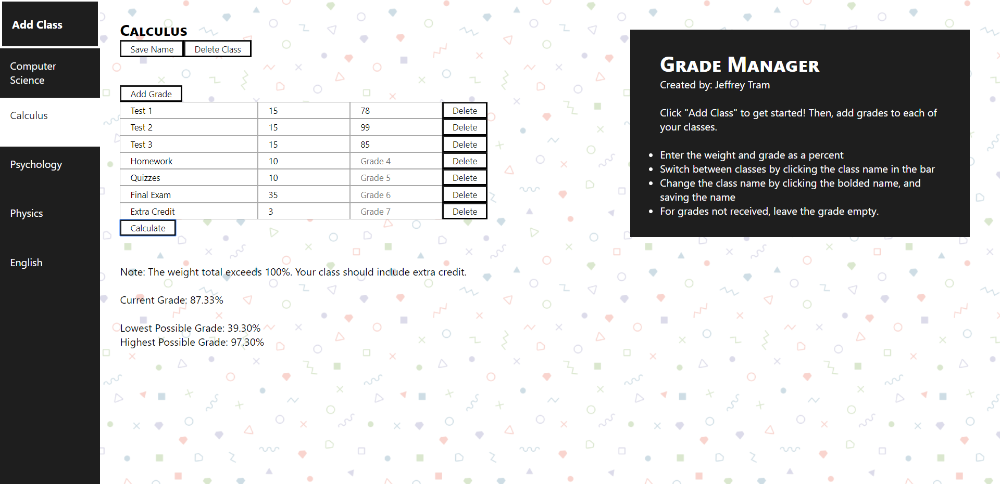
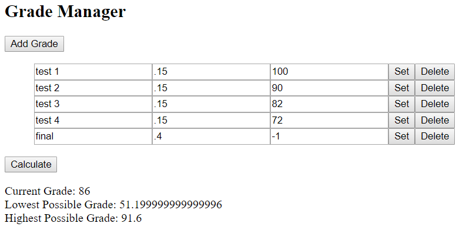
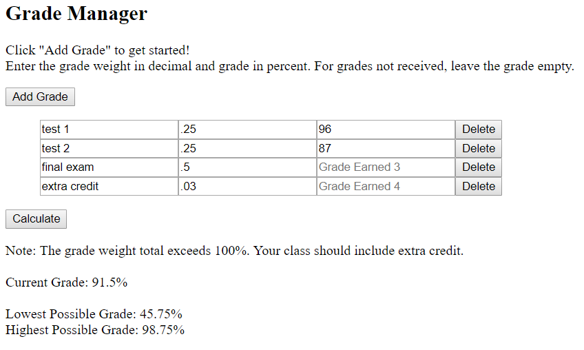
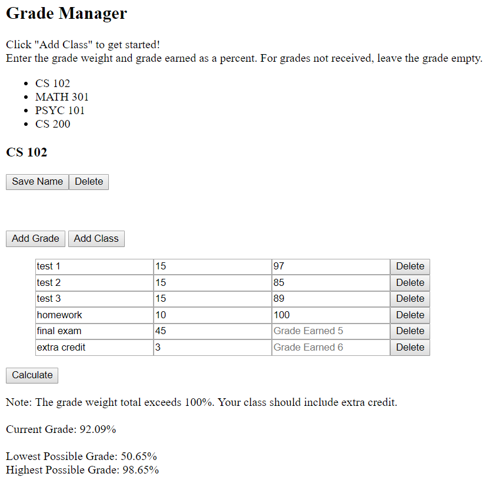
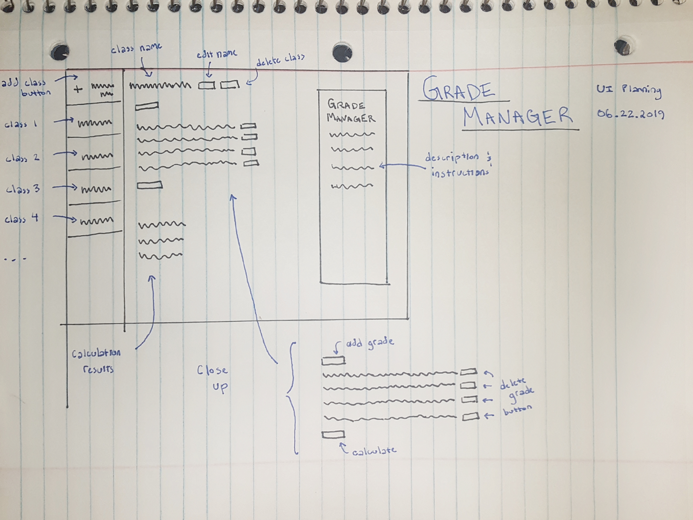
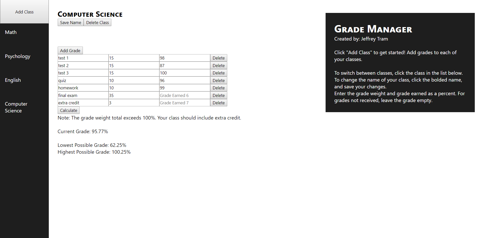
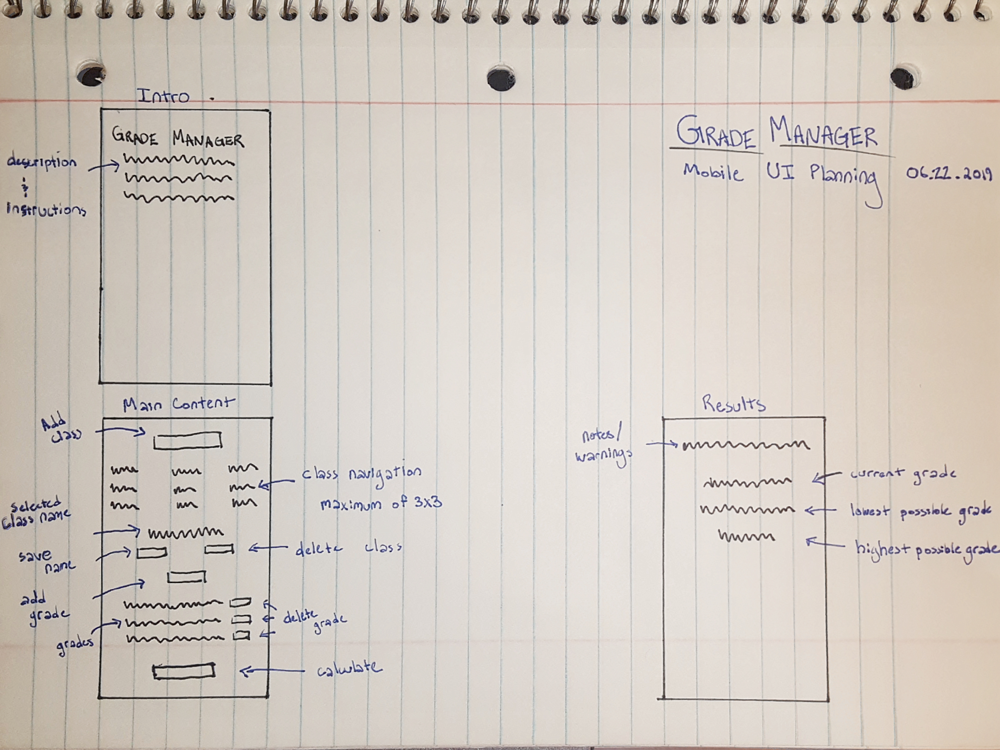
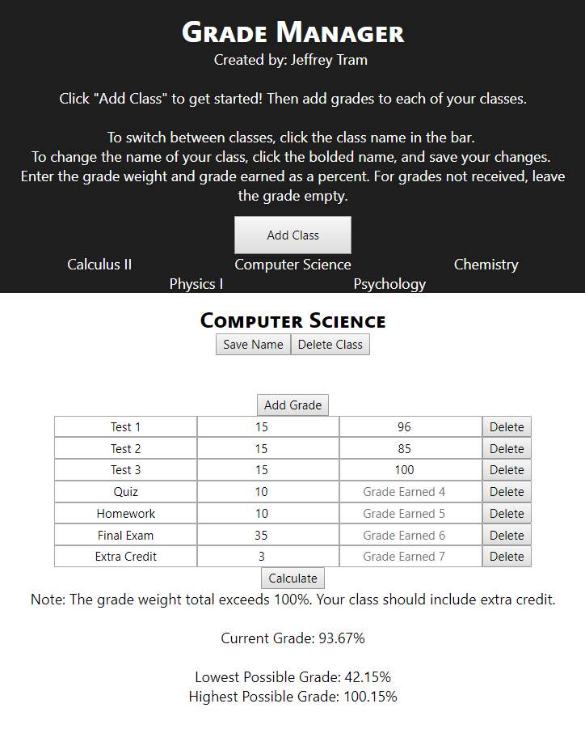

Languages used: Javascript, HTML, CSS

After my first semester at Georgia Tech, I went over what I could do to do even better moving forward. One
of the things that I noted was that if I knew exactly how much a certain quiz/test was impacting my
grade, perhaps I would've been more motivated to do better.
At the time, I also just started teaching myself Javascript, so why not kill two birds with one stone?
I simply wanted to first have the application work. The user inputs grades, and out spits a grade.
With the basic functions down, I focused on improving the user experience. Having to manually set each grade before calculating was annoying. Aswell as having to type a negative value instead of leaving it blank for grades you don't have.
The idea of having multiple classes came up, and it seemed like a wonderful idea. Since I didn't initially plan for it, I had to restructure most of my code.
With all the functions properly working, it was now time to start planning how I wanted the UI to look. I initially started planning with the desktop view for no particular reason.
I implemented the design with a responsive grid.
While the project was starting to look pretty neat on the desktop, it looked horrible on my mobile device. While it did scale, all of the information was now bunched up and hard to read. It was a complete mess. I had to plan a UI with mobile in mind.
Much better.
